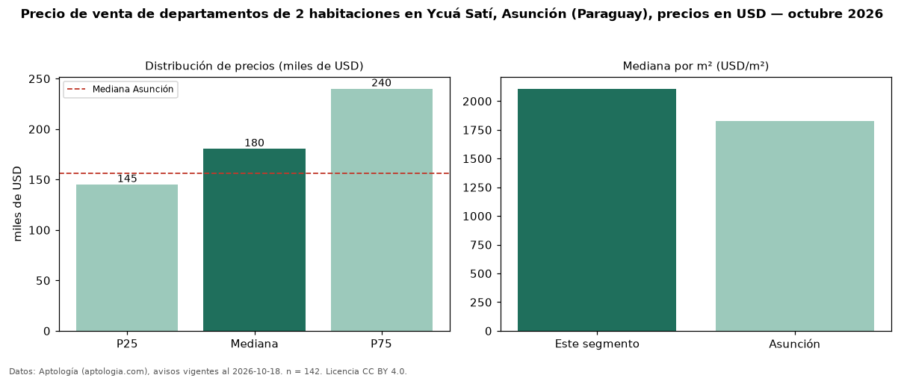

Precio de venta de departamentos de 2 habitaciones en Ycuá Satí, Asunción (Paraguay), precios en USD — octubre 2026
Con 142 avisos vigentes, el precio mediano de departamentos de 2 habitaciones en venta en Ycuá Satí, Asunción (Paraguay) es USD 180.500. Eso es 16 % por encima de la mediana de Asunción para departamentos de 2 habitaciones (USD 156.200). Por metro cuadrado, la mediana es USD 2.108/m² (n = 105 avisos con área), 15 % por encima de Asunción (USD 1.828/m²). Son 35 % de los 401 avisos de departamentos en venta de la zona, cuya mediana general es USD 149.000 (+21 %). Con el precio por m² de alquiler del mismo segmento (USD 14,84/m² al mes), la rentabilidad bruta implícita es 8,4 % anual (aproximación con medianas de ofertas distintas). El área mediana anunciada es 90 m². La mitad central de los avisos va de USD 145.000 a USD 240.000 (razón 1,7), una dispersión moderada. Datos: Aptología (aptologia.com), CC BY 4.0 — https://www.aptologia.com/py/venta/asuncion/ycua-sati. Archivos: PDF, CSV con las cifras y gráfica PNG.

| Avisos únicos | 142 |
|---|---|
| Percentil 25 | COP 145.000 |
| Mediana | COP 180.500 |
| Percentil 75 | COP 240.000 |
| Mediana por m² | COP 2.107 |
Fuente: avisos vigentes de portales inmobiliarios recopilados por Aptología, deduplicados (mínimo 30 avisos únicos por celda). Precios pedidos, no cerrados. Fecha: 2026-10-18.